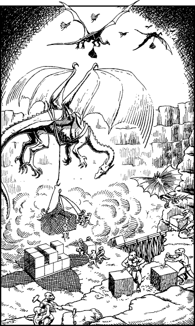

179
You descend the spiral stairs to the base of the tower and make your way quickly through the narrow alleys of this subterranean settlement. Your Kai camouflage skills keep you hidden from the Lavas and dragons that soar overhead, and you are able to reach the edge of the quarry unnoticed. Here you observe teams of reptilians chiselling freshly quarried stone into perfect cubes. Other teams load these heavy blocks into nets, fourteen to each, and then fix them by hooks and harness to the dragons who transport them across to the far side of the chasm.

Stealthily you make your approach to an area where full nets are awaiting transport. Using your Magnakai Discipline of Nexus, you open a sealed net and hide yourself inside among the blocks of stone before closing up the seal behind you. Minutes later you hear the beat of large wings and the frenzied chattering of the reptilian work crews as they struggle to affix the net to a dragon’s harness. Then the wings beat faster and you feel yourself swinging free from the ground. Slowly the great dragon hauls its heavy cargo into the air. As it begins to level out, you peer down through a gap in the blocks to see the chasm looming nearer. Then you see a river of scarlet lava flowing along the base of this great divide, more than a mile deep. The dragon is approaching the far side when suddenly it dips its huge head and looks down at the cargo hanging below its belly. An icicle of fear stabs your heart when you see its ghoulish eye staring directly at the place where you are hiding.
If you possess Animal Mastery and wish to use it, turn to 149.
If you possess Kai-surge and wish to use it, turn to 62.
If you possess Kai-screen and wish to use it, turn to 205.
If you do not possess these skills, or if you choose not to use them, turn to 42.